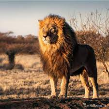
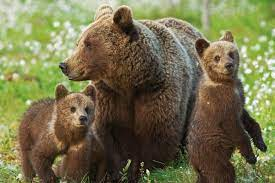
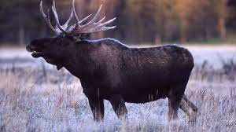
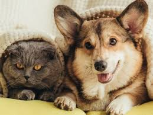
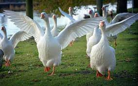
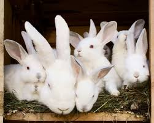
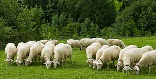

Описание типов животных
Дикие животные - это те , которые живут в лесах, на лугах, в водоёмах.
О них никто не заботится, они не зависят от человека, а сами добывают себе пропитание ,
строят жилища, заводят потомство и заботятся о себе и о своих маленьких детенышах.
Львы, тигры, бобры, лисы, зайцы, медведи, волки являются дикими животными.
Домашние животные живут рядом с человеком и зависят от него.
Человек у которого есть домашние животные заботится о них : кормит , следит за здорьем и обеспечивает их жилищем.
Собаки, кошки , попугаи,хомяки, черепахи являются примером домашних животных.
Дикие животные
На нашей планете живут различные представители животного мира. Их можно разделить на две большие группы: дикие животные и домашние животные.
Животных, которые живут сами по себе в естественной среде обитания, называют дикими.
Они самостоятельно заботятся о себе, добывают пищу и строят жильё.
Слоны, львы, кенгуру — это дикие животные. Примеры таких животных на территории России — лиса, заяц, медведь, волк, лось.
Люди ловят рыбу, а также охотятся на разных диких животных. Благодаря этой деятельности человек получает пищу и мех.
Однако не стоит забывать, что гибель большого количества животных определённого вида может привести к его вымиранию.
Вмешиваясь в природу из-за своих нужд, человек снизил количество многих диких животных, поэтому сейчас есть представители,
которые нуждаются в охране. Многим живым существам облегчит жизнь поддержка человека. Поэтому, хотя дикие животные живут отдельно от человека,
люди всё равно должны им помогать. Например, подкармливать их суровой зимой, когда пищи становится меньше,
создавать заповедники — охраняемые территории, где живут редкие дикие животные.
:
:
:
Домашние животные
Не все животные могут существовать самостоятельно.
Жизнь некоторых животных зависит от человека. Животные, которых специально разводят люди, называют домашними.
Человек кормит их, защищает, заботится об их потомстве, создаёт все необходимые условия для жизни.
Домашние животные тоже помогают человеку. Лошади, верблюды, ослы перевозят грузы. Кошка ловит мышей.
Собаки охраняют дом, ищут людей и разные предметы, помогают передвигаться незрячим людям, пасти скот, охотиться.
От многих домашних животных человек получает продукты питания. Например, коровы и козы дают молоко, пчёлы — мёд,
а куры, гуси, утки — яйца. От многих домашних животных человек получает мясо. Кроме того, домашние птицы дают пух и перья.
А овцы, козы и кролики — шерсть.




Домашние животные
Дикие животные
Чат
- Привет
- Как дела
- Пока
- Достал